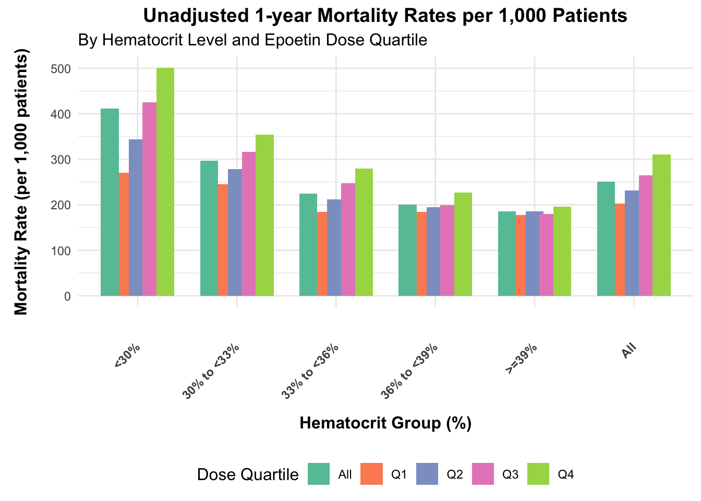

# Load required libraries
library(ggplot2)
library(tidyr)
library(plotly)
# Define the mortality rates dataframe
mortality_data <- data.frame(
Dose_Quartile = rep(c('Q1', 'Q2', 'Q3', 'Q4', 'All'), each = 6),
Hematocrit_Group = rep(c("<30%", "30% to <33%", "33% to <36%", "36% to <39%", ">=39%", "All"), times = 5),
Mortality_Rate = c(
271, 245, 185, 184, 177, 203, # Q1 data
344, 278, 212, 195, 186, 232, # Q2 data
425, 316, 247, 199, 180, 265, # Q3 data
501, 354, 280, 227, 196, 310, # Q4 data
412, 297, 225, 200, 186, 251 # All data
)
)
# Create the plot
p <-ggplot(mortality_data, aes(x = Hematocrit_Group, y = Mortality_Rate, fill = Dose_Quartile)) +
geom_bar(stat = "identity", position = position_dodge(width= 0.7)) +
scale_fill_brewer(palette = "Set2") +
labs(title = "Unadjusted 1-year Mortality Rates per 1,000 Patients",
subtitle = "By Hematocrit Level and Epoetin Dose Quartile",
x = "Hematocrit Group (%)",
y = "Mortality Rate (per 1,000 patients)",
fill = "Dose Quartile") +
theme_minimal() +
theme(
plot.title = element_text(size = 14, face = "bold", hjust = 0.5),
plot.subtitle = element_text(size = 12),
axis.title.x = element_text(size = 12, face = "bold", margin = margin(t = 30, b = 5)), # Adjust the top and bottom margin as needed
axis.title.y = element_text(size = 12, face = "bold", margin = margin(l = 5, r = 15)),
legend.title = element_text(size = 12),
legend.position = "bottom",
axis.text.x = element_text(angle = 45, hjust = 1, vjust = 0.5, face = "bold")) + scale_x_discrete(limits = c("<30%", "30% to <33%", "33% to <36%", "36% to <39%", ">=39%", "All"))
p
# Convert ggplot2 plot to plotly
q <- ggplotly(p)
q # Below show the interactive plot